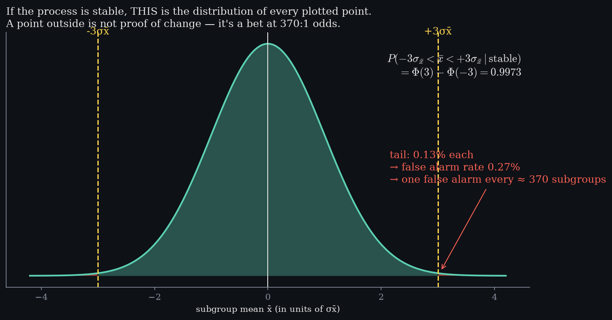
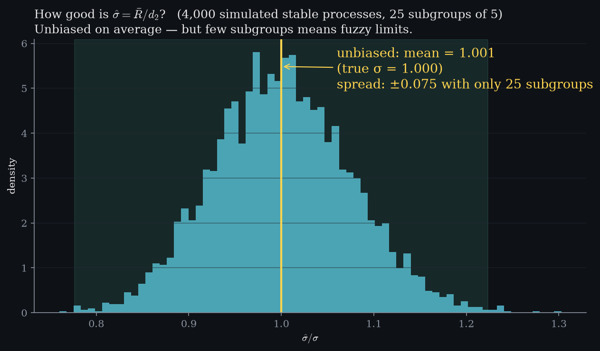
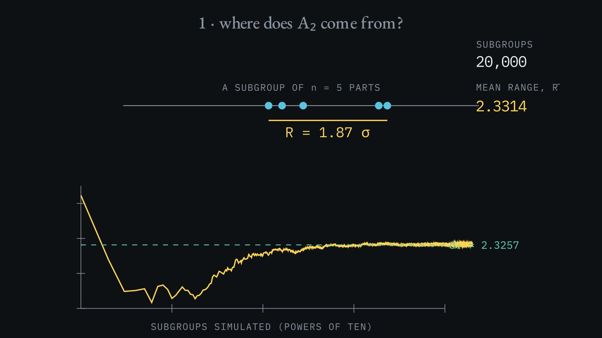
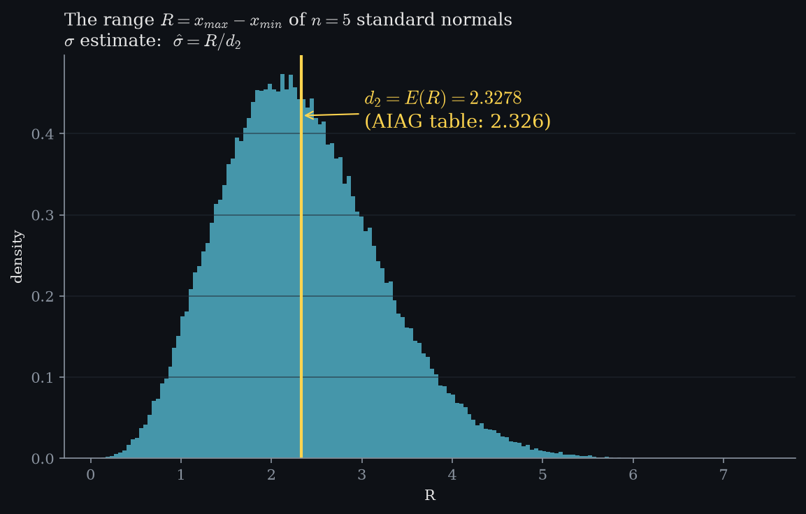
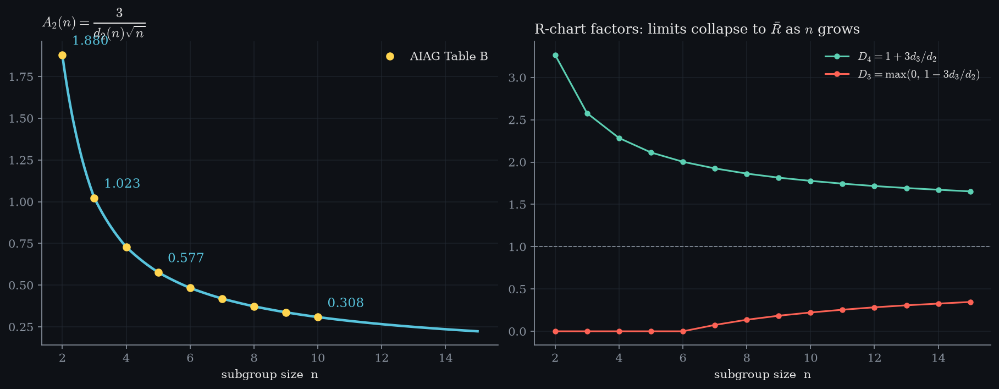

Level 6 · chapter six
Control limits are a hypothesis test
±3σ isn't taste. It's a bet at 370:1 odds.
after Level 4 — the average is predictable·leads to Level 8 — capability
- 6.1A curve that is a claimwhy the bell is a hypothesis about the process, not the parts
- 6.2Pricing ±3σthe integral between the limits, evaluated as they move
- 6.3Where the price hidesthe tails are 70× smaller than the chart — stretch the axis to see them
- 6.4The chart is that test, repeatedlimits turned on their side, and why boring is the goal
- 6.5How good is the σ estimate? — the bridge from a range to a standard deviation
- 6.6Where the constants come from — simulated, never looked up
A curve that is a claim
Level 4 told us which distribution every subgroup mean is drawn from, so long as nothing about the process has changed. H₀ — the nullThe process is unchanged: every subgroup mean is drawn from one distribution.Draw that distribution and you have not drawn a picture of your parts. You have drawn a claim.
The claim is that the process is unchanged — one stable stream, every subgroup mean pulled from the same curve. not H₀A statement about any individual part. A part is never in or out of control.That is the null hypothesis, and it is worth being pedantic about what it is a hypothesis about. Not this part. Not this batch. The process.
Everything that follows in this chapter is a consequence of taking that claim seriously enough to test it.spoken · 0:11“That curve is the null hypothesis. Not an assumption about the parts, but a claim about the process.”

Pricing ±3σ
Put a pair of limits on that curve and sweep them outward from the centre. what three sigma is worthin-control99.73 %outside0.27 %At every position the question has an exact answer: how much of the distribution is inside? Not looked up in a table — it is the integral of the curve between the limits, evaluated as they move.
Stop at three sigma and the answer is 99.73%. ΦThe standard normal CDF, computed from erf — not a table.spoken · 0:38“Ninety-nine point seven three percent. Nobody chose that number.”Nobody chose that number. It is simply what ±3σ is worth, and everything the process should ever do lives inside it.
The exact integral. 0.27% outside → one false alarm per ~370 subgroups.
- In-control area
- —
- False-alarm rate
- —
- False alarm every
- —
Shewhart picked ±3σ as the balance point: sensitive enough to matter, quiet enough that operators trust the alarm.
Where the price hides
The whole of the rest — the part that makes the chart worth running — is out in the tails, and at the scale of the last figure you cannot see it at all. axis stretch×70needed before the tails are visible at all.So stretch the vertical axis and let the tails grow. The peak goes straight out of frame, which is the point: the tails are about seventy times smaller than anything else on the chart.
Each wing is one tenth of one percent of everything, and there are two of them. the tail, pricedeach wing0.135 %both wings0.0027false alarm1 in 370Together they are the tail integral, and it has a closed form: 0.0027. Invert it and the bet is priced — one false alarm in 370 subgroups.
The chart is that test, repeated
A control chart is not a new idea on top of this one. allowed by H₀1 in 370It is the same test, run again on every subgroup, forever. The limits are the boundary we just drew, turned on its side. Every point inside is the process agreeing with the null hypothesis, and that is what boring looks like. Boring is the goal.
Then one point steps outside — say 4.1σ above the centre line, where the null allows one point in 370. the violation4.1 σspoken · 2:09“This is not a bad part, and scrapping it changes nothing. It is evidence against the hypothesis that nothing changed.”That point is not a bad part, and scrapping it changes nothing. It is evidence against the hypothesis that nothing changed. The correct response is to go and find what did.
How good is the σ estimate?
Everything so far assumed we know σ. estimating sigmasigma-hat from rangesR̄ / d₂at 25 subgroups±0.075 σspread in the estimate itselfOn a real line we do not — we estimate it, usually from the average range of the subgroups divided by a constant. That estimate is unbiased on average, but a chart built from twenty-five subgroups carries real fuzz in its own limits, which is why Phase I needs enough data before the limits mean anything.

Where the constants come from
is the expected range of n standard normals. the constantsd₂ at n = 52.326A₂ at n = 50.577simulated400 000subgroups, checked against AIAG Table B, and are the numbers printed on every shop-floor chart form. None of them is looked up here: each one is simulated, and then checked against the published table in a test suite. If the simulation and the table ever disagreed, the test would fail rather than the page quietly lying.

play

